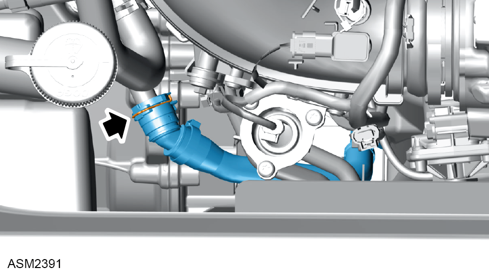
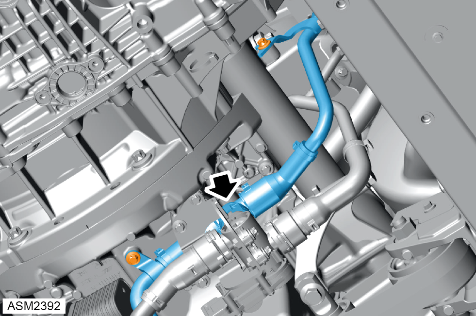
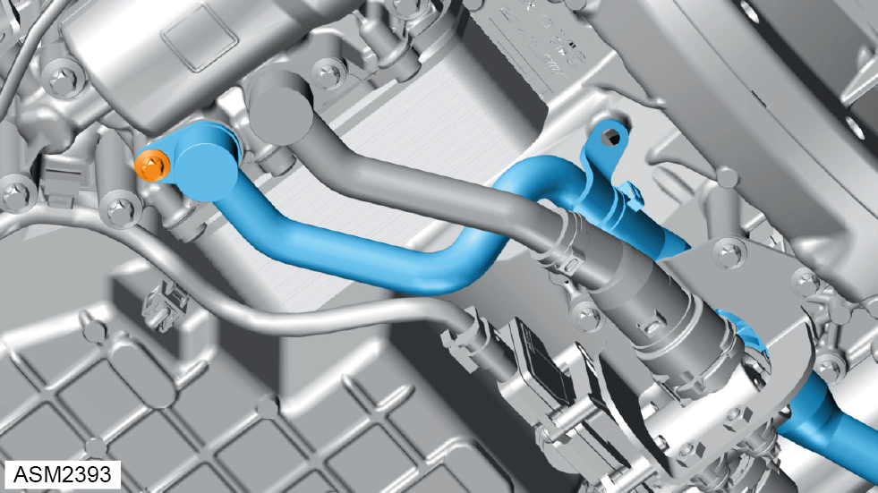

Hose - Engine to Oil Filter Housing - 4 Cylinder
Print
Operation Code: 40.15.32-02
Important Information
 WARNING: Risk of scalding. Allow coolant to cool completely before proceeding.
WARNING: Risk of scalding. Allow coolant to cool completely before proceeding.
WARNING: Coolant is a toxic substance and can be lethal if ingested.
Removal
- Drain coolant. Refer to procedure.
- Remove rear undertray. Refer to procedure.
- Remove engine cover. Refer to procedure.

- Release spring clamp securing coolant hose to engine.
- Disconnect coolant hose from engne.

- Remove M6 bolts (x2) securing coolant hose to engine. Torque 9 Nm.
- Release spring clamp securing coolant hose to coolant switchover valve.
- Disconnect coolant hose from coolant switchover valve.

- Remove bolt securing coolant hose to oil filter housing. Torque 8 Nm.
- Disconnect coolant hose from oil filter housing.
NOTE: Be prepared to catch any excess fluid.
NOTE: Remove and discard O-ring.
- Remove coolant hose.
Installation
- Installation is the reverse of removal procedure except for the following:
- Renew discarded O-ring.